The Right Choice
When is the Web the right answer —and why?
- The Bright Side of the Web
- User Expectations for the Mobile World
- Modern Web to the Rescue
- The Right choice
- Successful Examples
- Resources and Credits
The Bright Side of the Web
The Web is…
- Interoperable
- Frictionless
- Free (as in free speech)
- Discoverable
Interoperable
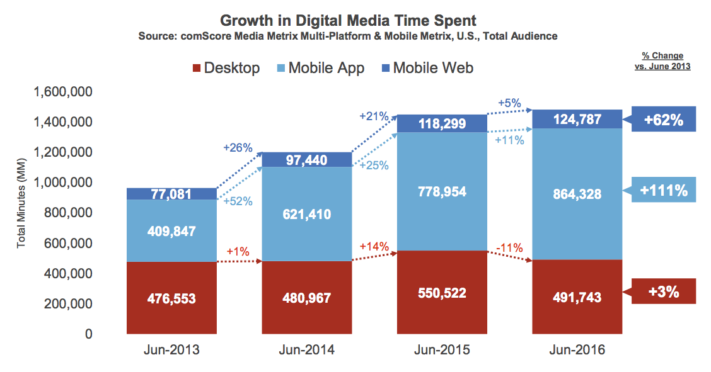Source: 2016 U.S. Mobile App Report
Confluence of factors is driving the huge uptick in app usage time, and apps are overtaking other media in importance. However, it’s also important to recognize the others haven’t gone away and the opportunity lies in multi-platform engagement.
Frictionless
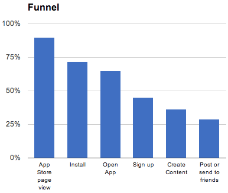Free (as in free speech)
The Web is not owned which means…
No review process
No content censorship
Discoverable
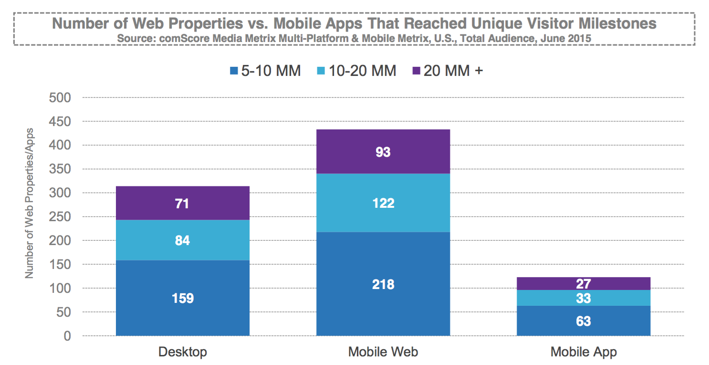Source: 2016 U.S. Mobile App Report

Source: 2016 U.S. Mobile App Report
User Expectations
for Applications
in the Mobile World
It's not an App on Android because it's made with Java. It's not an app on Android because it's made with C++. It's not an App on Android because you distribute it one way or the other. It's an app because the overall user experience is set by the OS about what is a first class citizen and what isn't.
And so being an app is simply meeting the user's expectations of all of the other things that the OS has given privilege to and all the other affordances that you're integrated into.
Apps run independent on connectivity


App vs. tab
Apps are first class citizens of the OS


App vs. tab
Apps can re-engage the user even if they are closed


App vs. tab
Can you tell what is the native app?

And now?
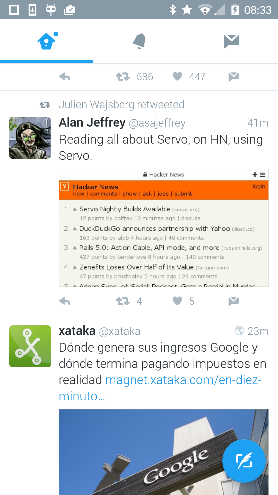 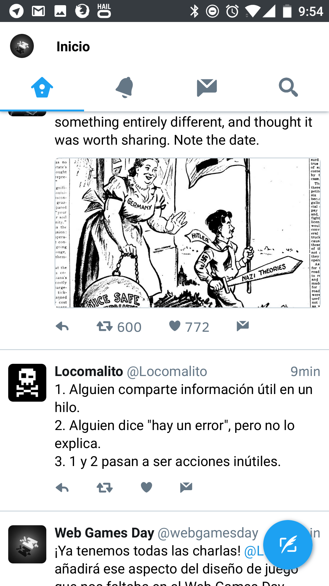But you certainly do now.
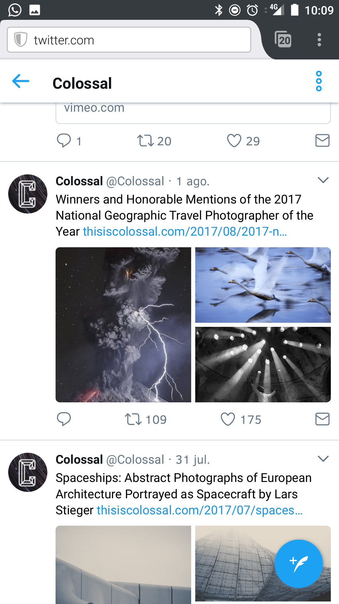Or now.
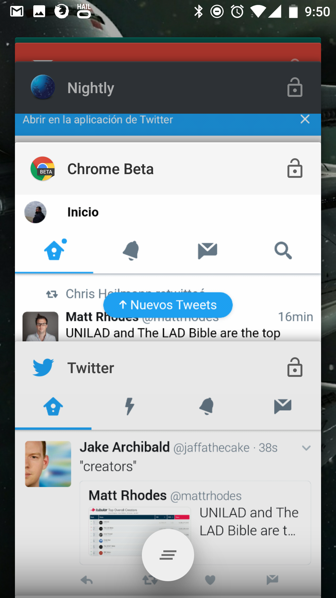In the mobile world, users expect to interact with applications.
In the web world, users expect to interact with browser tabs.
Different benefits for different platforms
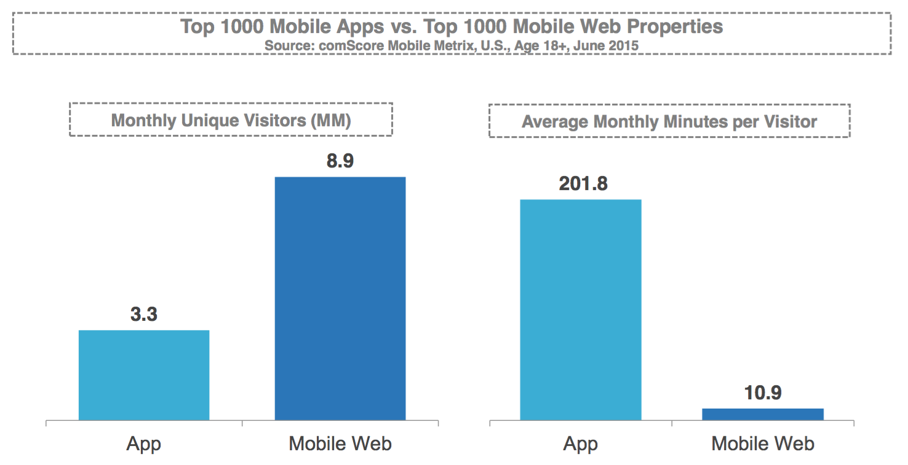Source: 2016 U.S. Mobile App Report
What you hope is that the experience with your entire company is so good, and the service or value you provide is so impressive, and the benefits to your app are so clear … that casual browsers turn into mobile app users.
—Wait, what? Mobile browser traffic is 2X bigger… at venturebeat.com (2015)
Mobile web is the primary vehicle for expanding audience reach, but apps are where heavy engagement happens. Publishers must get better at onboarding mobile web visitors to the app, and get their apps promoted to the home screen if they want to maximize usage.
Can we do better?
Modern Web to the Rescue
Fulfilling user expectation for apps requires web sites…
To integrate with the OS.
To provide reliable performance
(even on flaky connections).
To be independent on the browser.
Web Manifest
{
"name": "Flipkart Lite",
"short_name": "Flipkart Lite",
"icons": [ {
"src": "https://img1a.flixcart.com/www/linchpin/logo_lite-cbb3574d.png",
"sizes": "192x192",
"type": "image/png"
} ],
"start_url": "/?start_url=homescreenicon",
"orientation": "portrait",
"display": "standalone",
"theme_color": "#006cb4",
"background_color": "#006cb4"
}Partial manifest from Flipkart Lite.
 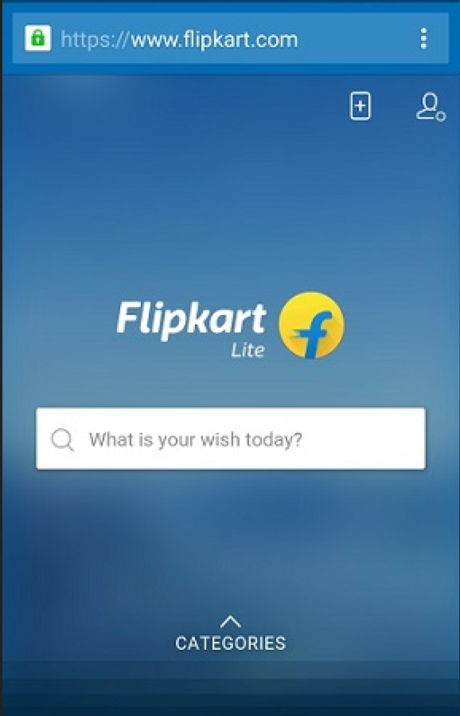
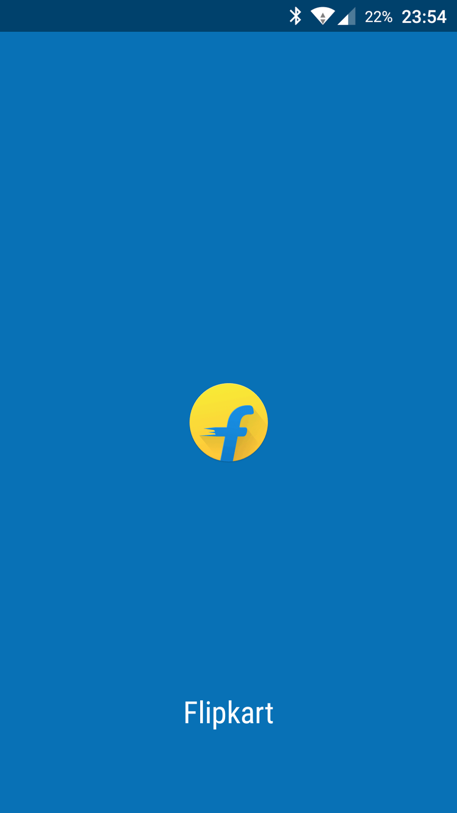
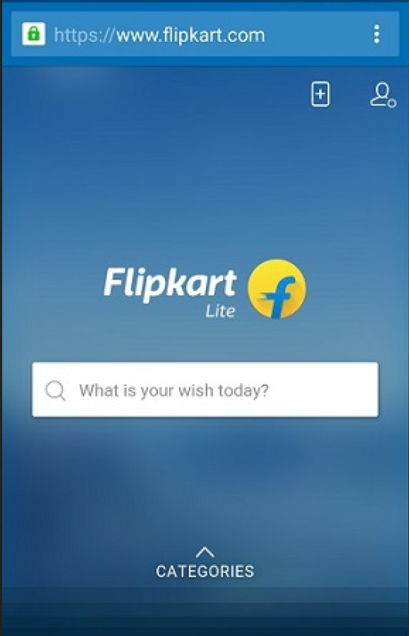
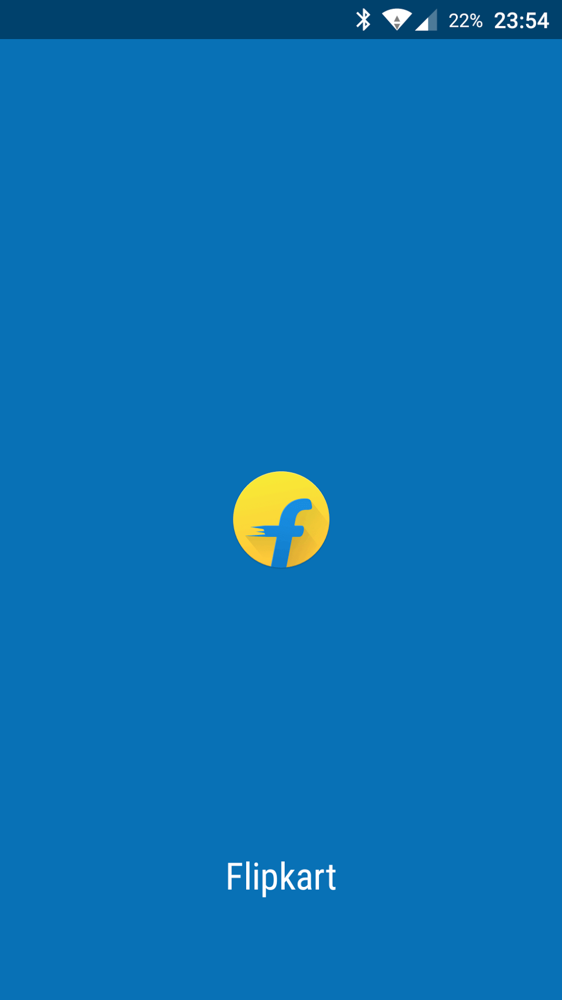
Service Workers
Service Workers are…
- JavaScript programs
- Run in a separate thread
- Independent from the browser being open
- Driven by events
Functional Events
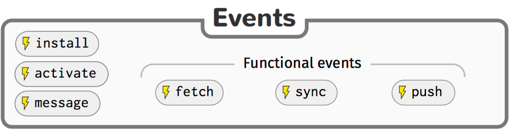Fetch


Push

Three words of caution: Timely, Relevant, Precise.

Source: 2016 U.S. Mobile App Report
Sync
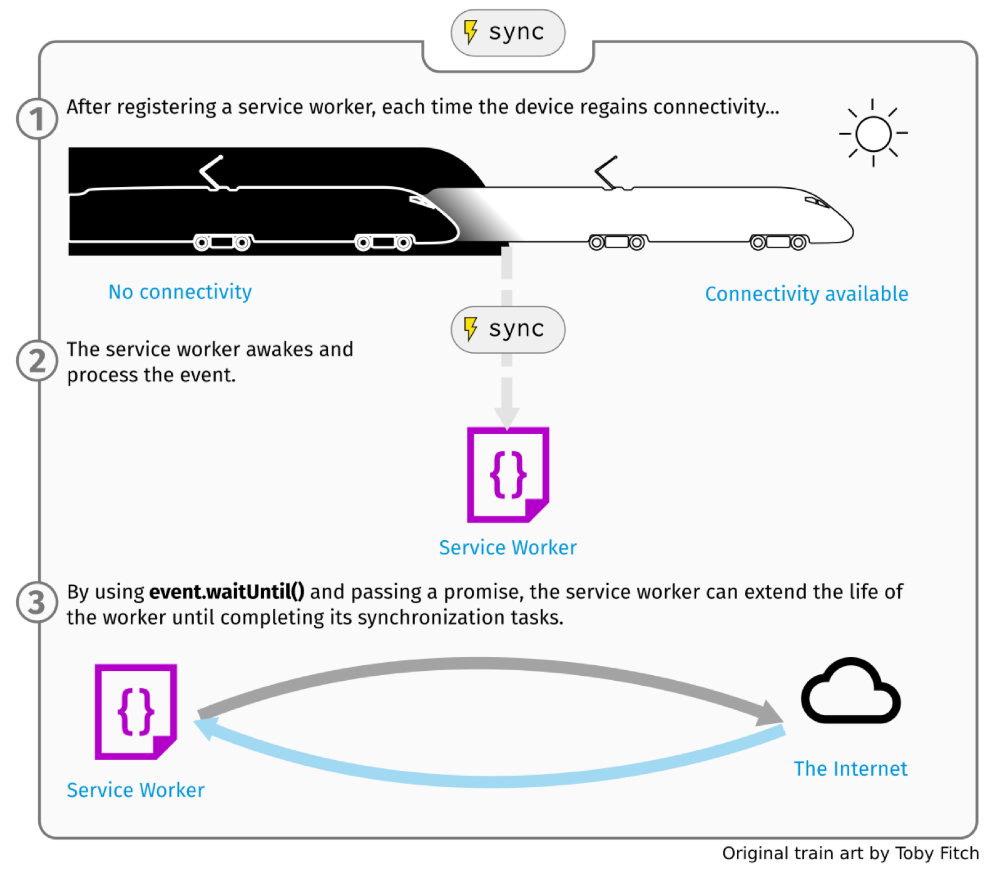And there is more to come...
- Web Payments
- Credential Management
The Right Choice
My recommendation:
- The Web by default
- If you have business arguments, stay away
- If you need access to non-available APIs, stay away
Successful examples
e-Commerce
- Flipkart triples time-on-site with Progressive Web App
- AliExpress increases conversion rate for new users by 104%
- United eXtra Electronics grows eCommerce sales by 100% with Web Push Notifications
- Push Notifications help Jumia reverse cart abandonment
- Konga cuts data usage 92%
- 5miles increases conversions 60%
Source: Google showcase
Heroes of Paragon
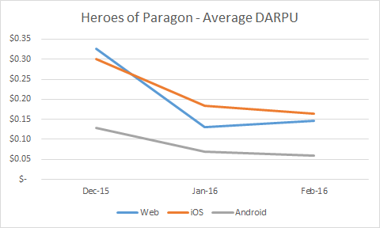WebGL matures into a commercial-ready technology
The Web holds 2nd position in DARPU.
Resources
- Alex Russell on Progressive Web Apps
- Flipkart Lite progressive web app
- Google showcase
- Paul Lewis aerotwist.com blog on performance
- Sevice Worker 101
- PWA Dev Summit talks
- Web vs. native: let’s concede defeat

Salvador de la Puente González